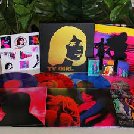
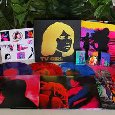

TV Girl é uma banda estadunidense de indie pop de San Diego, Califórnia, formada por Brad Petering, Jason Wyman e Wyatt Harmon. O grupo agora possui base em Los Angeles. Wikipédia Membros: Wyatt Harmon, Reagan Landen, Trung Ngo, Jason Wyman, Brayden Patterson, Joel Williams, Dan Komin. Gênero: Pop

 
